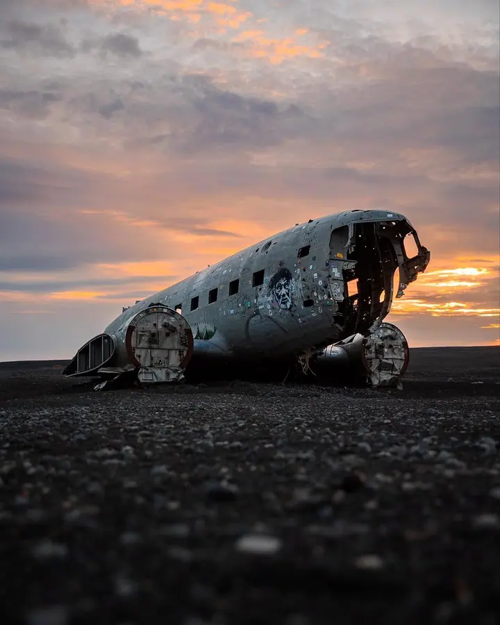
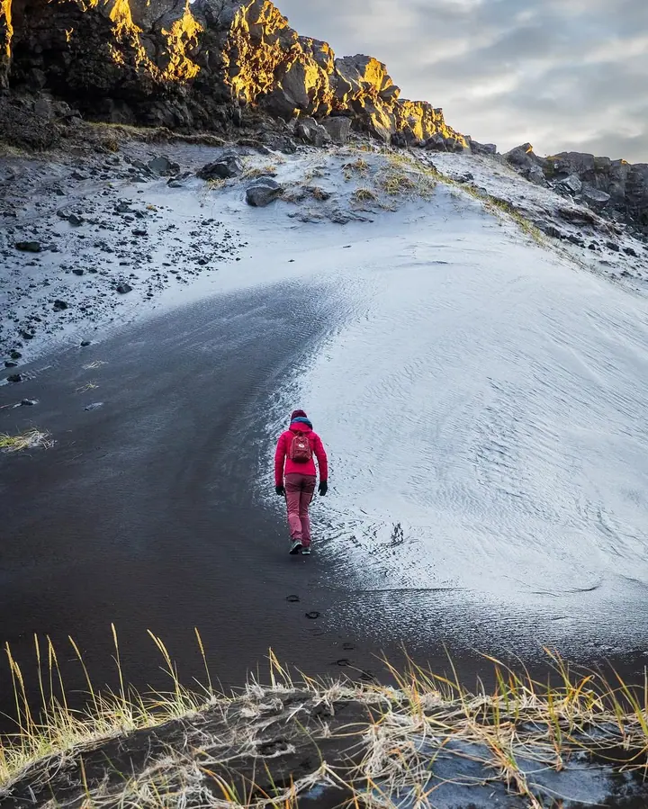
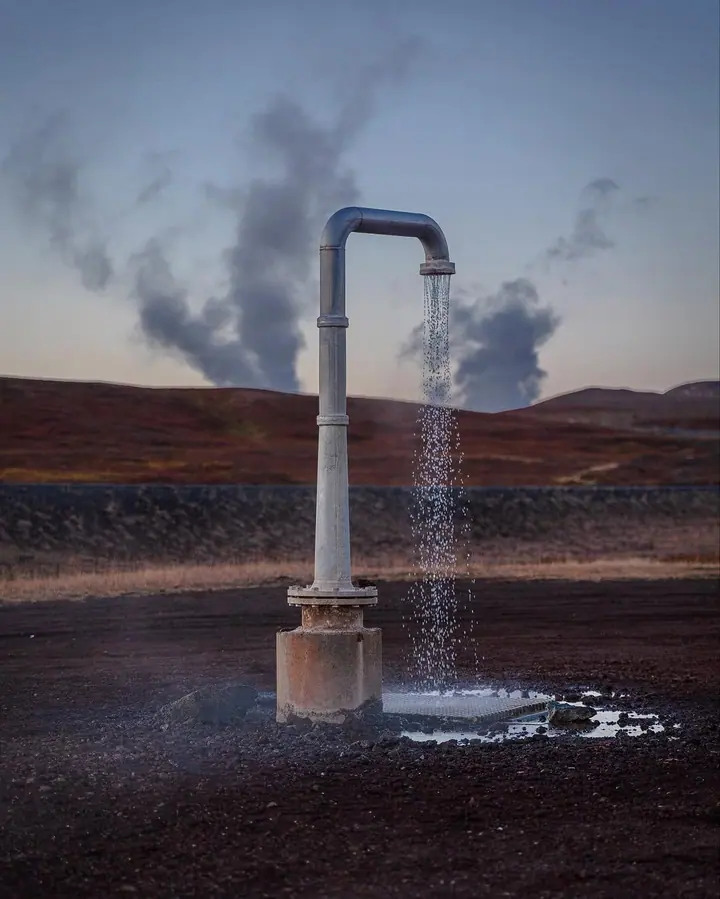
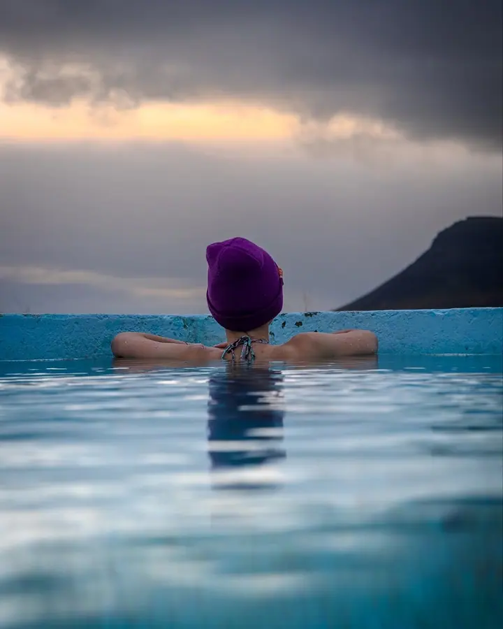
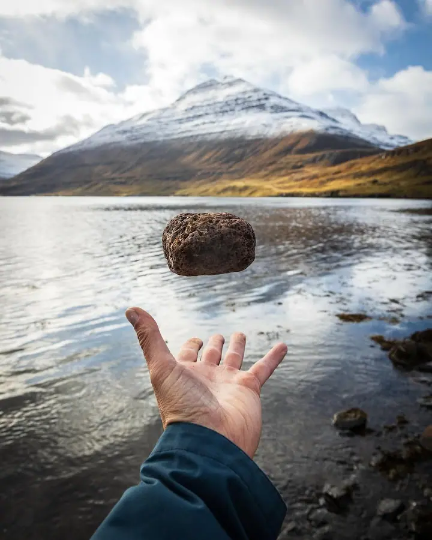
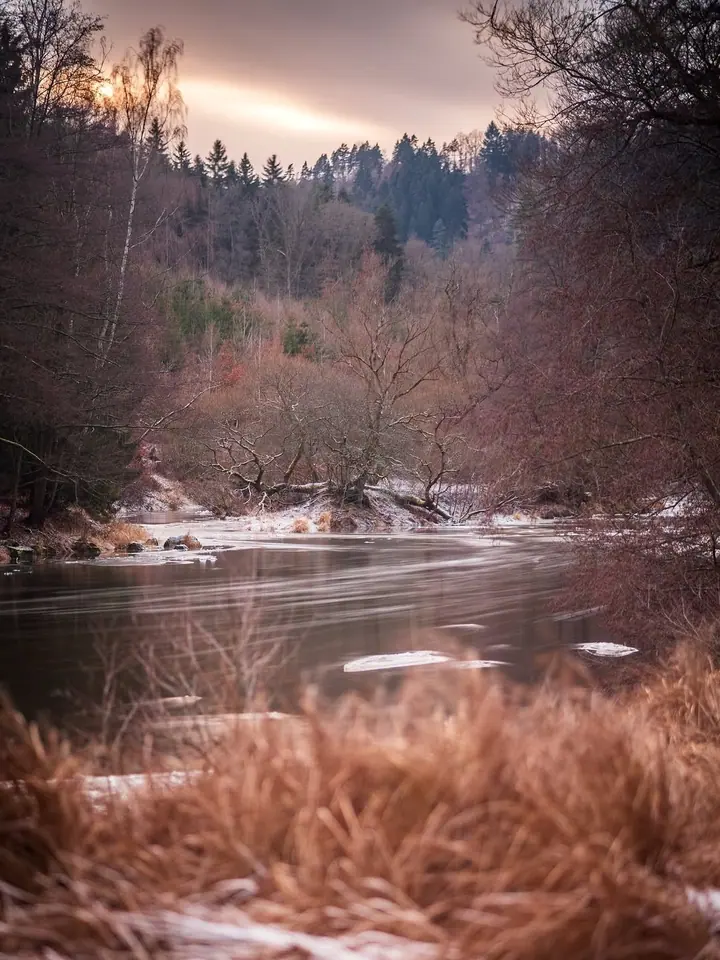
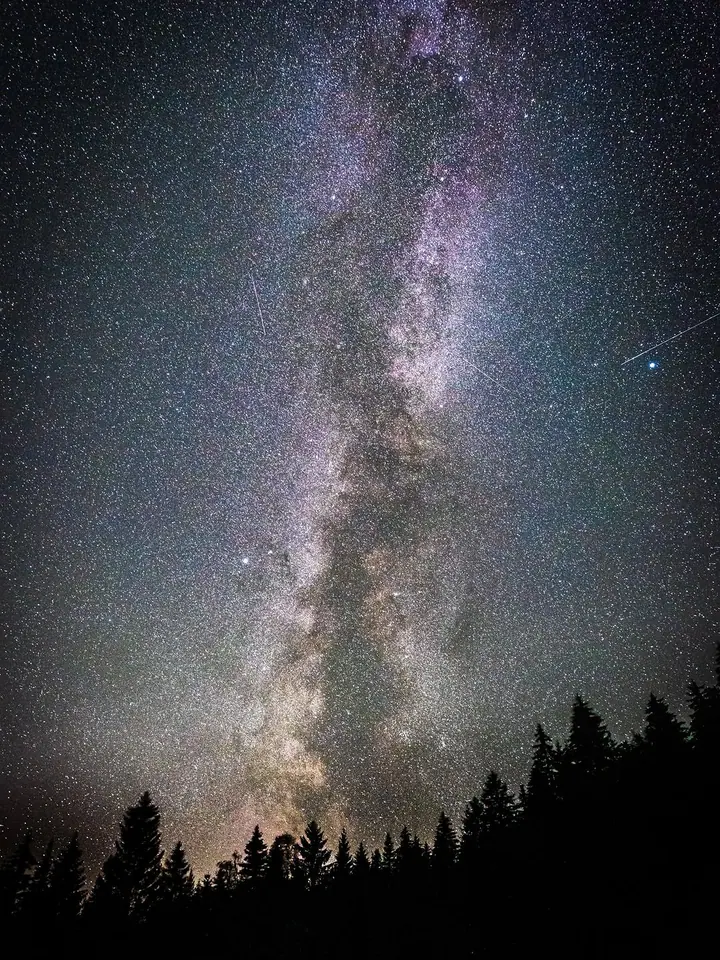
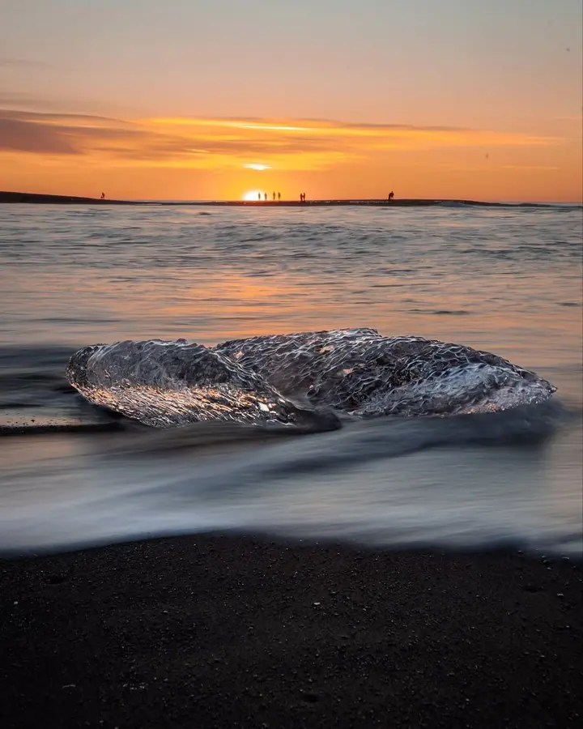
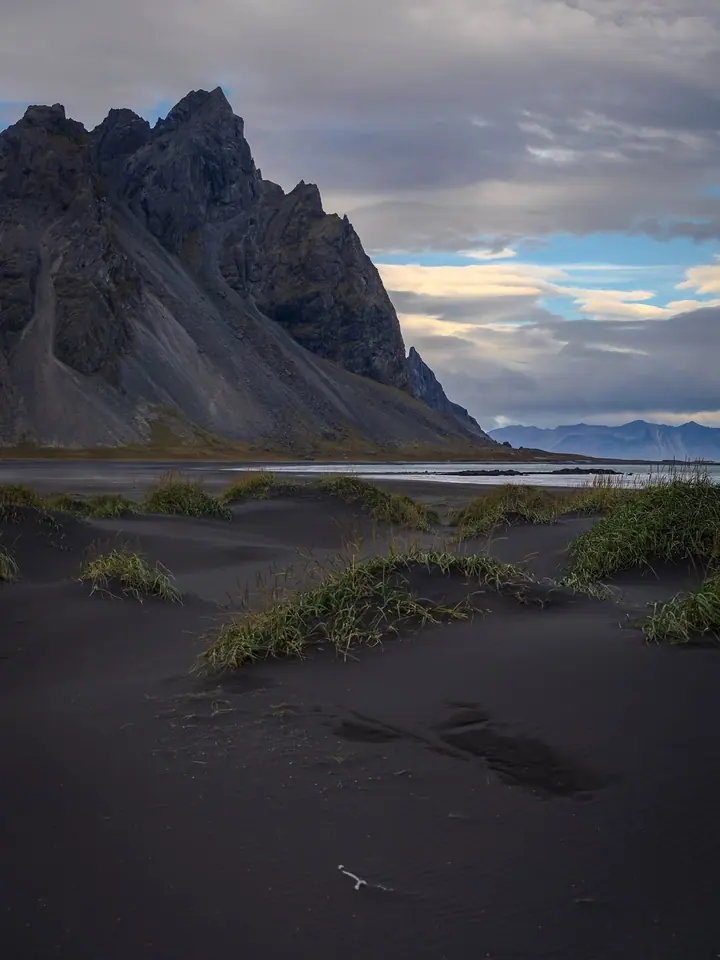

Martin Klatovský
Od krajiny až po živý přenos
Zeptat se na termín →(01) Ahoj
Jmenuji se Martin Klatovský a jsem fotograf na volné noze z Prahy. Jako producent eventů a videa a režisér streamů připravuji livestreamy, webcasty a podcasty i hybridní akce. S foťákem mě to nejvíc táhne ven za světlem, vodou a hvězdami .
1 414lidí sleduje mou práci na Instagramu
319příspěvků s fotkami a příběhy
(02) Co dělám
Focení, které vypráví
02 / 04
Fotografie na volné noze
Jako freelance fotograf fotím venku v krajině i na zakázku. Mám rád silné světlo, vodu a noční oblohu.
Zeptat se na termín→(04) Postup
Jak to probíhá
Od první zprávy po hotovou galerii.
-
1
Krok 1 z 4
Úvodní domluva
Napíšete mi nebo zavoláte a probereme, jakou akci chystáte a pro koho je určená.
-
2
Krok 2 z 4
Příprava
Společně ujasníme formát, místo, program a technické potřeby přenosu nebo natáčení.
-
3
Krok 3 z 4
Realizace
V den akce řídím přenos nebo natáčení, aby vše běželo plynule pro lidi na místě i online.
-
4
Krok 4 z 4
Předání
Po akci dostanete záznam nebo hotové materiály podle toho, na čem se domluvíme.
Každý dobrý obraz začíná přípravou
(05) Za objektivem
Ahoj, jsem Martin
Jmenuji se Martin Klatovský a pracuji jako freelancer s domovskou základnou v Praze. Živí mě obraz, ať už jde o fotku, video, nebo živý přenos.
Jako producent eventů a videa a režisér streamů se zaměřuji na livestreamy, webcasty, podcasty a hybridní akce. Postarám se, aby to, co se děje v sále, vypadalo dobře i na obrazovce u diváků.
Když zrovna nestojím u režie, fotím krajinu. Černé pláže, ledovce, hory, noční oblohu s Mléčnou dráhou. Ukázky najdete na mém Instagramu.
- 01Pracuji jako freelancer
- 02Mám základnu v Praze
- 03Režíruji živé streamy
- 04Natáčím i podcasty
- 05Fotím krajinu a noční oblohu
Martin
Martin Klatovský · Fotograf, producent eventů a videa
Jaké akce připravujete?
Zaměřuji se na livestreamy, webcasty, podcasty a hybridní akce, které běží zároveň na místě i online.
Co znamená hybridní akce?
Část publika sedí v sále a část sleduje přenos na dálku. Postarám se, aby obě skupiny měly z akce dobrý zážitek.
Fotíte i na zakázku?
Ano, pracuji jako fotograf na volné noze. Napište mi, co potřebujete, a domluvíme se.
Jak vás nejlépe kontaktuji?
Napište mi na martin.klatovsky@gmail.com, zavolejte na +420 605 500 388, nebo použijte formulář na webu.
(07) Kontakt
Pojďme připravit vaši akci
Napište pár vět o tom, co si představujete, a termín, který se vám hodí.
martin.klatovsky@gmail.com- Instagram @martin_klatovsky_photo
- Praha · Česko